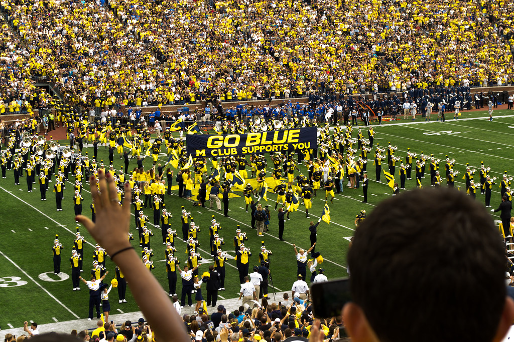

Desmond Ridder (#9 in White, QB for Cincinnati) seen here dropping back to pass during Cincinnati's 35-13 win over East Carolina to clinch a perfect 12-0 regular season. (R24KBerg Photos, flickr.com)
The University of Alabama (Tuscaloosa) football program from 2016-2021 never had a winning percentage under .840. A ridiculous mark for college football. Including the 2020, Covid-19 affected season, where the Crimson Tide went undefeated in their 13 games and took home a national championship.
Coincidentally, Alabama has also been one of the top programs in spending over that same span. From 2016-2021, it owns four of the top ten spots in total program expenses in the entire FBS subdivision of the NCAA. In 2016, 2017, 2018, 2020, and 2021, Alabama was the highest spending program in college football. This begs the question, does spending equal winning?
For the purpose of this article, the 2020 season will be removed from the data set as it was not a complete season with some teams, like Alabama, playing over ten games, while others played mostly between three and seven total games.
There are also eight schools missing from the data set as the Equality in Athletics Data Analysis, presented by the U.S. Department of Education did not have data for those schools. The schools missing are Pennsylvania State University, Liberty University, University of Massachusetts at Amherst, University of Connecticut, Brigham Young University, The United States Military Academy (Army), The United States Naval Academy (Navy), and The United States Air Force Academy (Air Force).
Is there a correlation between spending and winning?
No national champion has won it all without spending more than 40 million dollars. The four schools that have different colors than the rest have won a championship between 2016 and 2021. Clemson in 2016 and 2018, Alabama in 2017, Louisiana State in 2019, and Georgia in 2021.
Billy Blood, the Associate Athletic Director for Finance and Administration at the University of Oregon says that there is not an exact correlation between spending and winning, but the more you put into something, the more you should get out.
“There is not a direct correlation, but with that being said, the more resources you put into something, the expectations have to match those resources, and the competitiveness should match the resources.” Blood said.
While there may not be a legitimate correlation, the data does show that putting more in does generally get you more out. Looking at the University of Oregon specifically, it has been in the top-35 in spending every season from 2016-2021. The Ducks from 2018-2021 finished inside that top-35 bracket. Both head coaches in 2016 and 2017 did not return to Oregon the following season.
The Michigan football team walking out to a full stadium in Ann Arbor. The Wolverines have a .740 winning percentage since 2016, excluding the 2020 covid season, and are a consistent top spender in college football. (ajay_suresh, flickr.com)
In general the universities that pour the most into their programs have been rewarded with winning seasons. There are outliers to this of course, like the University of Central Florida in 2017 that went 13-0 despite the university only spending 21.6 million dollars.
There is also the flip side of that where a university will put a ton into its program and the product will not come close to the expectations. The University of Southern California in 2021 is a great example of this idea. The Trojans spent 67.7 million dollars to only go 4-8 and not qualify for a bowl game. The head coach of that USC team would not return in 2022.
One way to look at this is that a university does NOT HAVE to spend to play competitive football, but if that university wants to win a national championship, it will have to break out the checkbook in a big way.
Is winning all about money though?
Winning in college football also depends heavily on strength of schedule. Teams are only guaranteed to play 12 total games, and the majority of those games will come against in-conference opponents. Some conferences are much stronger and deeper than others.
Good examples of this are Central Michigan in 2016 and Appalachian State in 2019. Both teams went 13-1, but spent less than ten million dollars on their programs that respective season. Central Michigan plays in the Mid-American Conference and Appalachian State plays in the Sun Belt Conference.
Neither conference is part of the power-five, known as the five strongest all-around conferences in the NCAA, the Atlantic Coast Conference(ACC), BIG 10, BIG 12, Pacific 12(PAC-12), and Southeastern Conference (SEC). Power-five schools generally spend more and win more consistently than non-power-five conference universities.
Any champion since 2016 has been in a power-five conference. Any NCAA football champion since 1988 now resides in a power-five conference.
Does location play a factor in winning?
There is no direct correlation between winning and where the university is located. The flip side is that location plays a big factor in building conferences. The University of Washington, located in Seattle, would not belong in the SEC.
Every national champion from 2016 to 2021 was located between the states of Louisiana and South Carolina. The only state between that area without a title is Mississippi, but there is definitely something to location and winning.
Brett Huebner, the Senior Associate Athletics Director of Business Affairs & Administration/CFO for the University of Tennessee says that while actual location does not have a direct effect on winning, it may have an effect on the talent brought into each program, especially those in the South East.
“Where did all the number one draft picks come from growing up? Where did all the five-star recruits come from growing up? There is a density in the South East.” Huebner said.
Since the College Football Playoff system was implemented in 2014, only one school west of the Mississippi has won a title, LSU in 2019. Other than Ohio State in 2014, every national champion has been from the South East with all of them being inside that little five state area.
Since the turn of the century, only four programs outside of the South East have been considered national champions.

Osa Odighizuwa (#92 in blue, DE for UCLA) rushing the pocket against Austin Jackson (#73 in red, OT for USC) in UCLA's 52-35 rivalry loss against USC in 2019. USC has not been college football champions since 2004 and UCLA has not been since 1954. (Steve Cheng, Bruin Report Online, flickr.com)
While location may not have a direct impact on winning, it has a direct impact on where recruits come from and the South East has generally had the cream of the crop in terms of talent.
The combination of money and location generally does have an effect on winning, even if it is not easy to see directly. The programs that spend more tend to be in stronger or tougher divisions and those in better divisions are grouped based on location.
Money does more of the heavy lifting, but location plays a factor. Just like the saying money can’t buy happiness, money can’t buy wins, but it certainly helps.